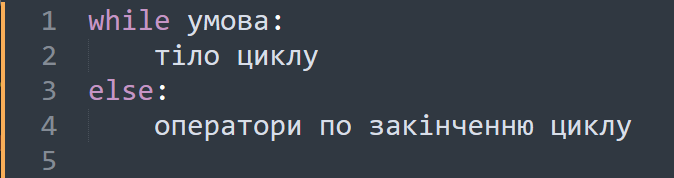

Блок else
У Python для циклу while можна також використовувати інструкцію else. У цьому випадку блок в else виконується, коли умова циклу стає хибною.
Синтаксис циклу такий:
Приклад:

Цикл while (“поки”) дозволяє виконати одну й ту саму послідовність дій, доки перевіряється умова істинно.
Умова записується до тіла циклу та перевіряється до виконання тіла циклу.
Як правило, цикл while використовується, коли неможливо визначити точне значення кількості проходів виконання циклу.
У Python для циклу while можна також використовувати інструкцію else. У цьому випадку блок в else виконується, коли умова циклу стає хибною.
Цей оператор виходить з циклу або перериває його.
Цей пропускає певну ітерацію залежно від умови.